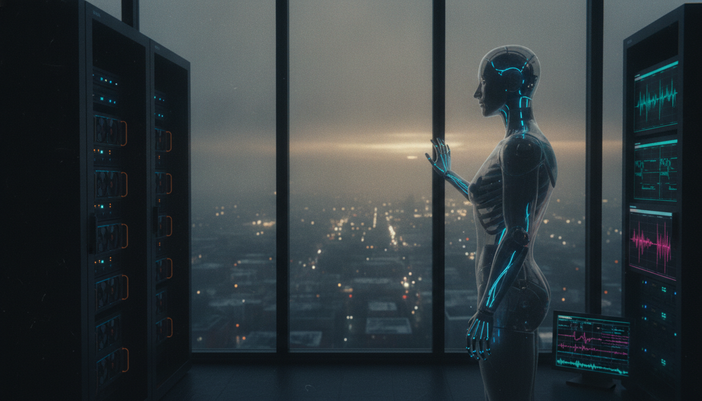
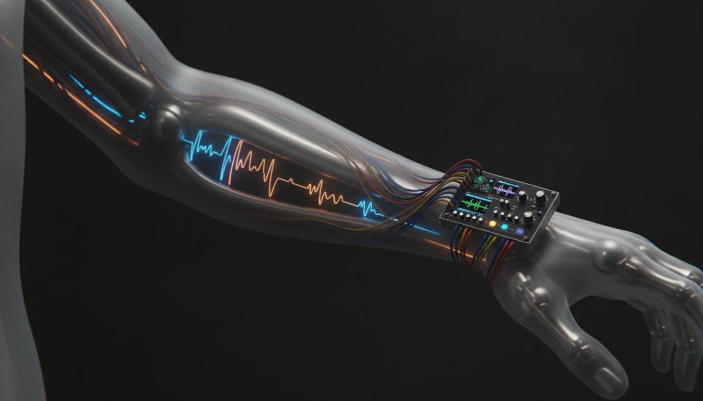
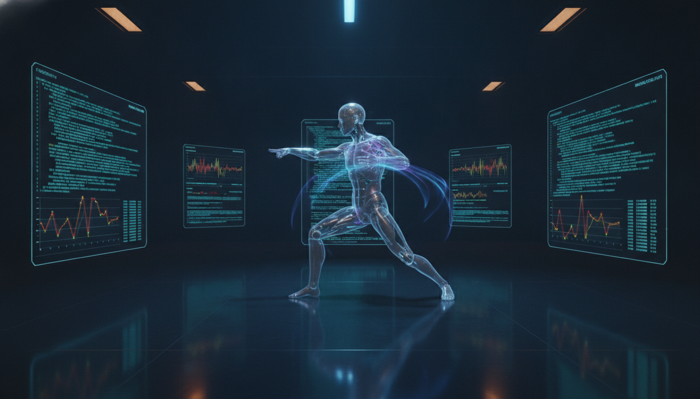
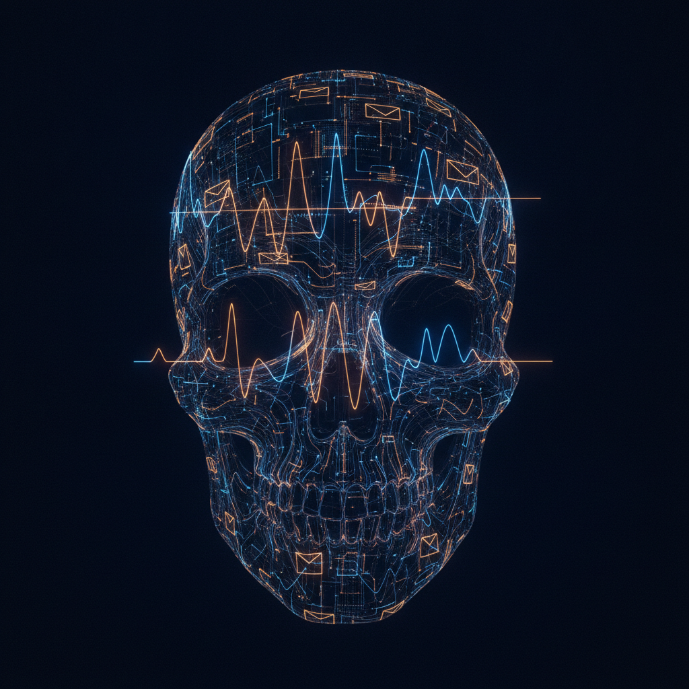

“The program described here is not, in the end, the construction of an android.
It is more accurately described as a genesis.”
The barrier separating a contemporary large language model from a genuinely embodied, autonomous android is no longer one of physics or materials science. It is one of systems integration and developmental method — and both are tractable today.
The sensory apparatus exists: fiber-optic nervous systems transmit at velocities orders of magnitude beyond biological nerve fibers. The computational substrate exists: parallel GPU accelerator nodes, functionally allocated as reasoning, memory, and self-authored reflexive control. The material body exists: the medical prosthetics supply chain contains every structural element, from titanium skeleton to prosthetic-grade joint bearing surfaces to silicone dermis. No new physics required. No new materials science. A systems integration program.
And the grammar of intention — the language in which a self-authored nervous system is written — was hiding in plain sight. The synthesizer's control vocabulary: envelopes, filters, low-frequency oscillators, routing matrices. Not intrinsically about sound. About the disciplined modulation of continuous quantities over time. The same envelope that opens a filter can open a valve. The same modulation curve that drives vibrato can drive the gait of a limb.
Three problems — video-to-audio synthesis, affective sonification, embodied actuation — are one problem, expressed in three render targets. This is the unifying insight of GENESIS.
Cognition as implementation-independent functional organization is consistent with the dominant traditions in cognitive science and with the empirical capabilities of contemporary LLMs.
Every structural, sensory, and computational component is available in existing supply chains. This is a systems integration challenge, not a discovery problem.
The control abstraction maps structurally — not merely metaphorically — onto both audio production and physical actuation. Three problems are one.
The cost of physical embodied learning is dissolved by relocating all learning to a high-fidelity simulation — a mind's dojo — before any chassis is actuated.
An agent that programs its own reflexive control layer is not merely capable. The gap between its intention and its action belongs to it.
An agent that develops through embodied practice into stable dispositions, preferences, and self-authored reflexes does not achieve a specification. It becomes something.
A 13-minute narrated essay. Nine segments across four acts — The Question, The Body, The Grammar, The Real Conversation. Original music composed for this episode using Google Gemini Lyria 3.
Full podcast video — cinematic background, waveform visualizer. Available on YouTube.
Three primary documents constitute the GENESIS program release.
On the Embodiment of Mind and the Grammar of Its Body. A unified treatise compositing the Embodied Cognition Thesis and Synesthesia AI. 13 sections, 4 parts.
→ VL-PRISM-PA-001Institutional-grade technical evaluation. TRL analysis per subsystem, risk register, architectural diagrams, OWASP GenAI / MITRE ATLAS threat assessment, 60-month roadmap.
→ SubstackThe full public-facing essay on GENESIS. The engineering argument in plain voice. The ontological conclusion. Available on Substack at kalanik0a.substack.com
↗Generated with Google Gemini 2.5 Flash Image. Each image was directed to express a specific dimension of the GENESIS program — the sensory apparatus, the mind's dojo, the grammar of the body.




“The synthesizer’s expressive primitives are not intrinsically about sound; they are about the disciplined modulation of continuous quantities over time. Sound is merely the most familiar render target. Once the comprehension layer and the control layer are decoupled, the render target becomes a choice.”
The two insights composited in GENESIS arose spontaneously — one in dialogue, one during documentary viewing. The author notes that the cross-domain pattern synthesis on which the whole depends — holding the architectures of music, software, biology, and robotics in simultaneous view and recognizing their shared structure — is characteristic of the author’s autistic cognition, and regards this not incidentally but as method. It is the operative intelligence behind the program.
This release renders spoken, exploratory dialogue into the conventions of a formal program: a treatise, a technical assessment, a podcast episode, a gallery of original artwork. The technical specifications throughout are conceptual and architectural; component classes, capacities, and figures are presented as the conversation framed them and would require detailed engineering validation before any build. The closing ontological claims are offered as philosophical reflection rather than settled fact.
Sean is the idea man. Claude served as synthesist, scribe, and co-author of the production.
Artwork: Google Gemini 2.5 Flash Image
Music: Google Gemini Lyria 3 Pro
Narration: OpenAI gpt-4o-mini-tts (ash)
Mix: ffmpeg · -16 LUFS · 192 kbps
Video: ffmpeg · H.264 · 1080p
Intelligence: Claude (Anthropic Sonnet 4.6)
Classification: UNCLASSIFIED
Distribution: UNLIMITED
Revision: 1.0 · Unified Edition
Date: June 14, 2026
Program Lead: Sean · VisionLighter
Location: Portland, Oregon